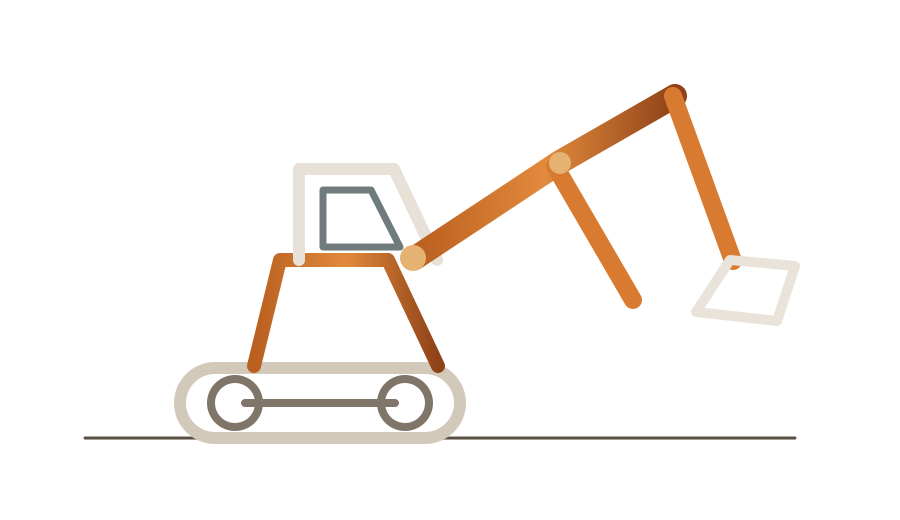
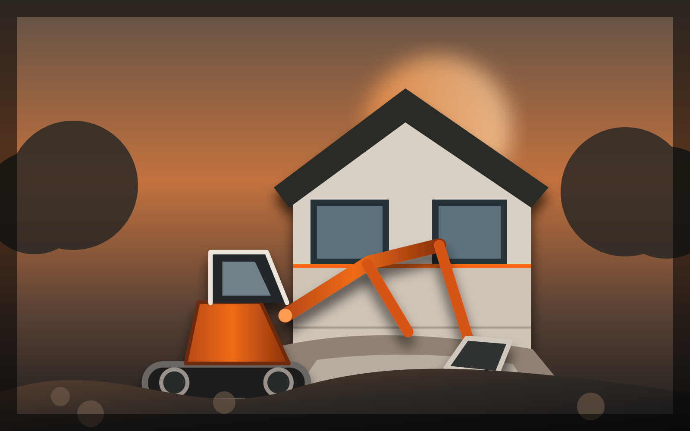
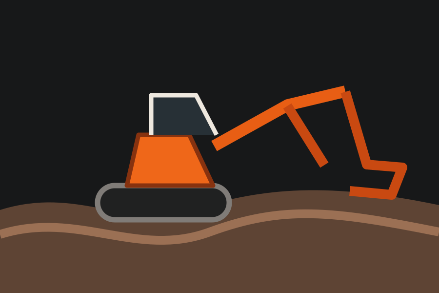
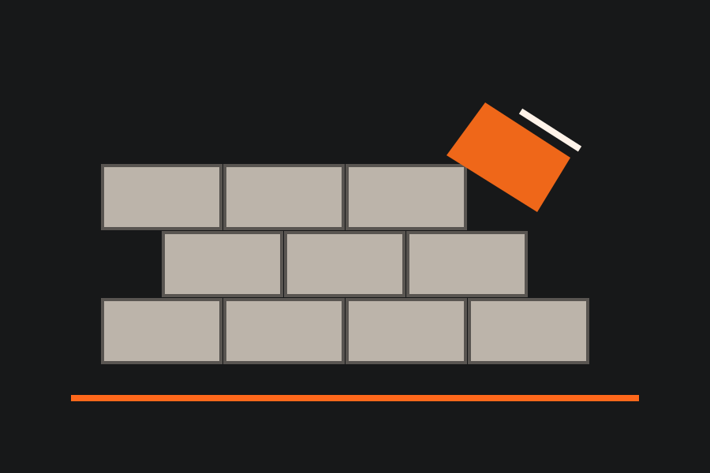
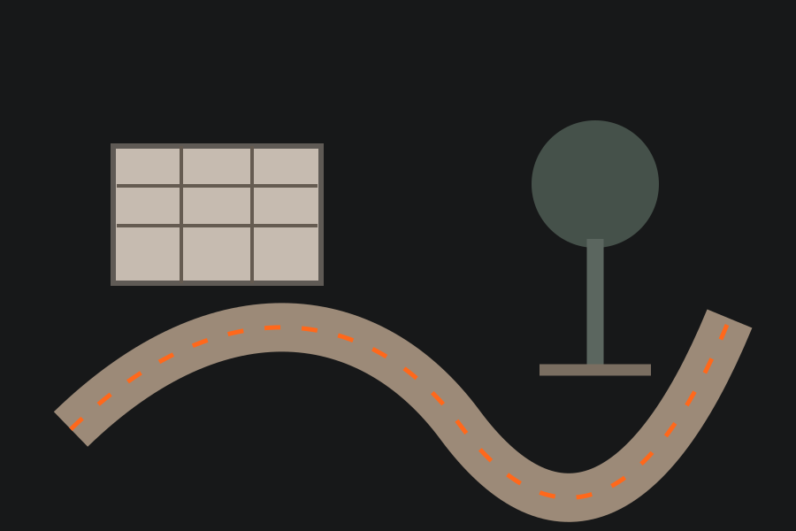
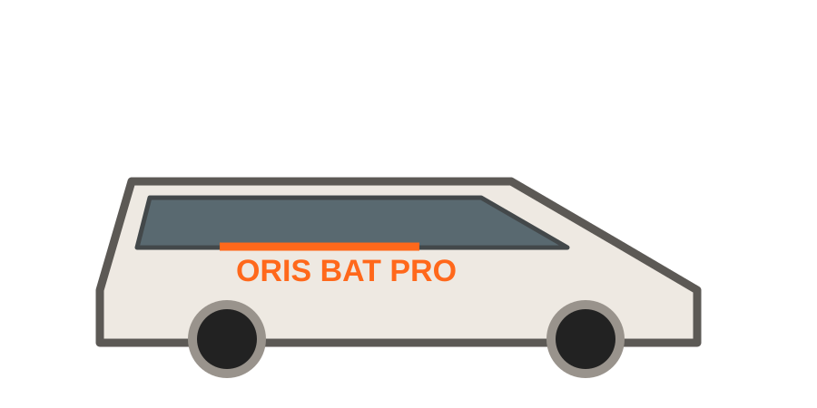
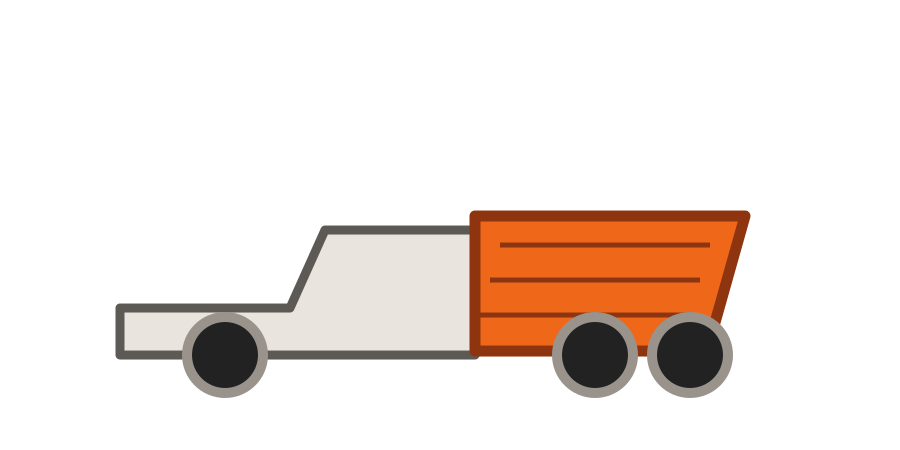

MINI-PELLE 01Terrassement
DENNEY · BELFORT · PARTICULIERS
CONSTRUIRE
VOS PROJETS
PRENNENT
FORME.
Terrassement, maçonnerie, façades, isolation extérieure et aménagement de votre maison.
20 ANS D’EXPÉRIENCE MÉTIER2 MINI-PELLESJUSQU’À 120 KM
POUR VOTRE MAISONPréparer.
Construire.
Rénover.Un interlocuteur pour vos extérieurs et vos façades.
Construire.
Rénover.Un interlocuteur pour vos extérieurs et vos façades.
NOS MÉTIERSUN SAVOIR-FAIRE
UN SAVOIR-FAIRE
AU SERVICE
DE VOTRE MAISON.
ORIS BAT PRO accompagne principalement les particuliers : terrain, accès, murs, façades, isolation et aménagement des abords.

⌁
TERRASSEMENT
Décaissement, fouilles, nivellement, tranchées et préparation de terrain.
→
▦
MAÇONNERIE
Murets, reprises, petits ouvrages et travaux extérieurs autour de la maison.
→
▥
FAÇADES
Ravalement, rénovation et isolation extérieure selon le support.
→
◇
EXTÉRIEURS
Accès, cour, préparation de terrasse et organisation de vos abords.
→20ANS
D’EXPÉRIENCE MÉTIER
D’EXPÉRIENCE MÉTIER
2MINI-PELLES
POUR VOS CHANTIERS
POUR VOS CHANTIERS
120KM MAX.
SELON LE PROJET
SELON LE PROJET
MAISON
& EXTÉRIEURS
& EXTÉRIEURS
POUR LES PARTICULIERS
VOTRE MAISON.
VOTRE TERRAIN.
UN PROJET CLAIR.
Pas de discours compliqué : on regarde le terrain, l’accès, l’état du support et ce que vous voulez obtenir. Ensuite, le chantier est organisé avec le matériel adapté.
✓ Préparation de terrain✓ Murets et maçonnerie extérieure✓ Ravalement et isolation de façade✓ Accès, cour et abords
Parler de mon projet →
NOTRE MATÉRIELÉQUIPÉS POUR
ÉQUIPÉS POUR
VOS EXTÉRIEURS.
Un parc matériel utile pour intervenir chez les particuliers, préparer les accès et gérer les matériaux.

MERCEDES SPRINTERIntervention & transport
CAMION-BENNE MITSUBISHIMatériaux & évacuationVisuels d’illustration du parc matériel — ils ne sont pas présentés comme des photographies des véhicules réels.
COMMENT ÇA SE PASSE ?DU PREMIER APPEL
DU PREMIER APPEL
AU CHANTIER.
VOUS NOUS EXPLIQUEZ
Type de travaux, commune, photos et délai souhaité.
ON ÉTUDIE L’ACCÈS
Terrain, largeur de passage, niveaux et contraintes du chantier.
DEVIS & ORGANISATION
Le périmètre du chantier est défini avant intervention.
RÉALISATION
Le chantier est réalisé par étapes avec le matériel prévu.
ZONE D’INTERVENTION
DENNEY
+ 120 KM
Interventions autour de Belfort, Montbéliard, Héricourt, sud Alsace et secteurs voisins, selon la nature et la durée du chantier.
Vérifier mon projet →UN PROJET ?PARLONS-EN
PARLONS-EN
DÈS AUJOURD’HUI.
Décrivez votre projet en quelques étapes et ajoutez des photos si vous en avez.